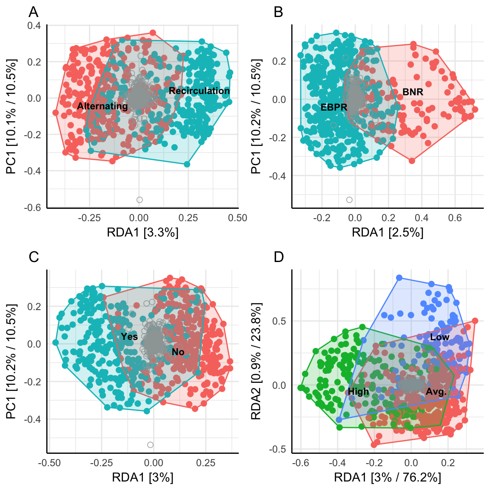

6 Results Part 2: Explaining
Soeholt: Digester fra summer 2009 Viborg: RSS og EBPR fra early 2012
6.1 The effect of plant design on the microbial community composition

Figure 6.1: EV fit CCA, hellinger - updated 14/3-15:20

Figure 6.2: EV fit RDA, hellinger - updated 14/3-15:20
6.1.1 Configuration

Figure 6.3: Plant design, hellinger - updated 14/3-15:20
[1] "Eigenvalue of RDA1: 1.2%"6.1.2 Enhanced Biological Phosphorus Removal (EBPR) vs Biological Nutrient Removal (BNR)

Figure 6.4: EBPR vs BNR, hellinger - updated 14/3-15:20
[1] "Eigenvalue of RDA1: 0.9%"6.1.3 The effect of primary setling

Figure 6.5: Primary setling, hellinger - updated 14/3-15:20
[1] "Eigenvalue of RDA1: 1%"6.1.4 The effect of industral inflow water

Figure 6.6: Industrial, hellinger - updated 14/3-15:20
[1] "Eigenvalues of RDA: 1.1%, 0.3%"6.2 Plant stability over time

Figure 6.7: Stability

Figure 6.8: Stability

Figure 6.9: Stability

Figure 6.10: Stability Viborg

Figure 6.11: Stability Ejby Moelle